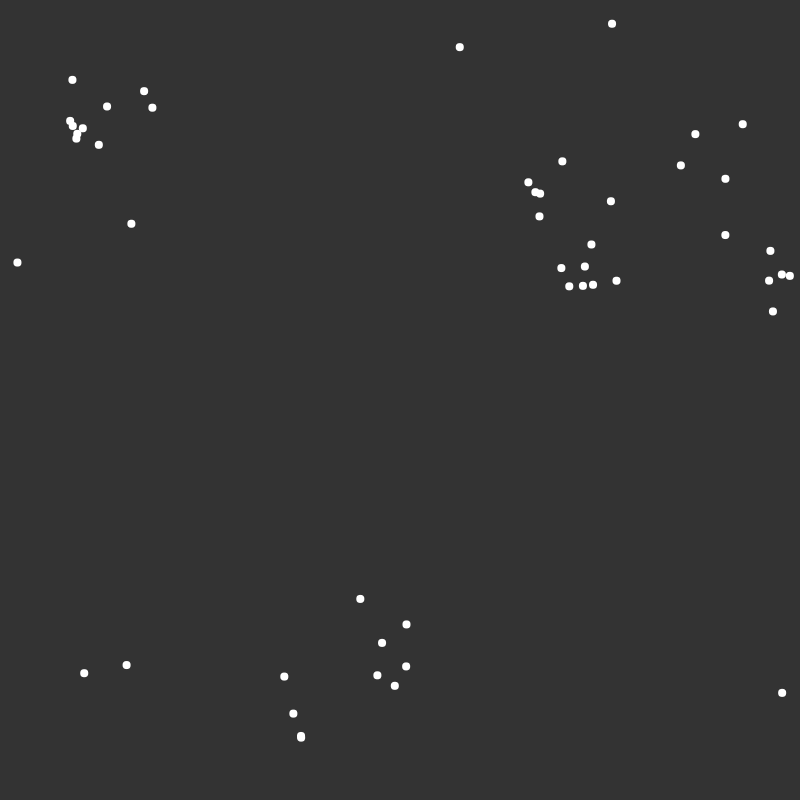

Liam Kouch
contact: liam [dot] kouch {at} utdallas [dot] edulocation: richardson, tx
interests
- physics and engineering
- ordinary and partial differential equations and their applications
- algorithms
- web design :D
about me.
Hi! Welcome to my personal website. My name is Liam Kouch and I'm a first-year at the University of Texas at Dallas studying Computer Science.
Currently, I'm studying
projects i'm working on
Poster
Liam Kouch, Amrit Rathie, Sachi Chundu, Caleb Lim
Swarm robotics is an area of research that involves the utilization of many decentralized agents to accomplish a global task. Due to the abundance and decentralized nature of each individual bot, the advantages of these systems are robustness and scalability. The goal of this project was to explore swarm robotics algorithms by researching them, implementing such algorithms, and comparing various performance features in a virtual environment for resource aggregation. Specifically, we designed and tested two bio-inspired algorithms, namely pheromone and cockroach, in the Unreal Engine. Research results were presented at the 3rd UTD ACM Research Symposium in Fall 2021. Advised by Dr. Ovidiu Daescu

some writing i've done from IB during high school
Physics IA Essay (Unabridged)
In my high school physics class, I learned that the restoring force of a simple pendulum is directly proportional to the displacement for angles less than 10 degrees which was used to derive the common formula for the period. Why 10? Well, this fact is only an approximation and within 10 degrees the error is relatively small. So what is the actual relationship? Is there a better formula for period? My essay explores this topic.
Math IA Essay
When I was learning about mechanics, I wondered where the formulae for moments of inertia of various 3D objects came from. In this essay, I use multiple methods to find moments of inertia of different 3D objects such as multiple integrals and solids of revolution.

Extended Essay (EE)
Quaternions. The word itself appears quite strange yet enticing as the mathematical system it describes. I do a bunch of math to show the equivalency between quaternions and rotation matrices. In hindsight, this essay was unnecessarily drawn out. The image is a plaque to commemorate William Hamilton's discovery of quaternions.

miscellaneous
Boid Simulation
A boid simulation simulates flocking behavior found in many species such as birds and fish. The importance of this simulation is the boids' complex and emergent behavior stemming from three simple rules. Seperation: boids accelerate to avoid crashing to other boids. Alignment: boids try to align with the local heading. Cohesion: boids steer towards average position of locality. I programmed a simple version in javascript. Click here to go to the simulation.
